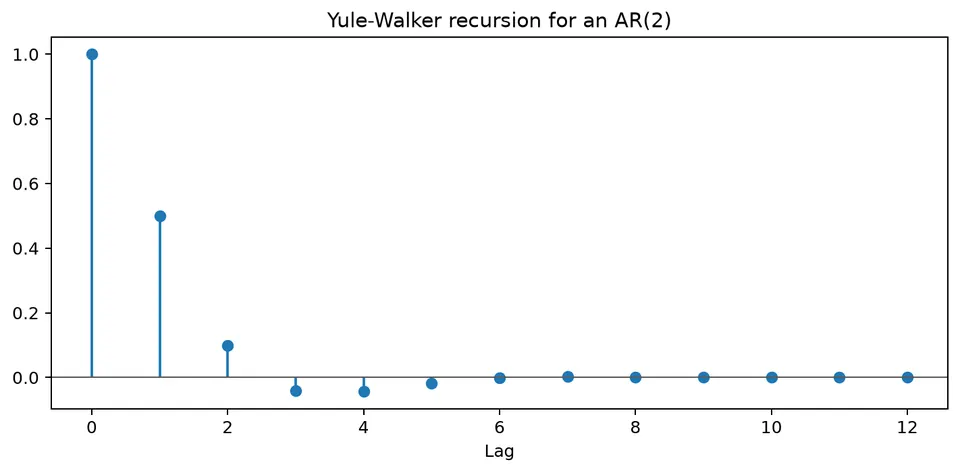
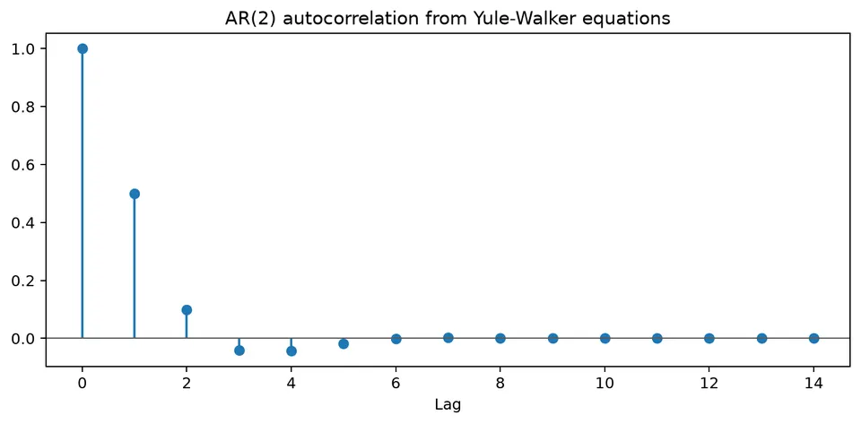

Yule-Walker Equations
An AR equation predicts the next value from earlier values. The Yule-Walker equations describe what that prediction rule implies for covariance across lags. Multiply the model by an earlier centered observation, take expectations, and use the innovation's lack of covariance with the past. The result is a set of linear relationships between the AR coefficients and the autocovariances.
This provides two useful directions of calculation. Starting with coefficients, we can derive the dependence pattern the model should produce. Starting with estimated lag covariances, we can solve for coefficients. Both directions rely on the stationary, past-driven AR assumptions stated below.
The equations also supply a consistency check. Algebra can always be manipulated into a proposed recursion, but a valid covariance function must have nonnegative variance and correlations between $-1$ and 1. The deliberately invalid AR(2) example shows how those constraints expose a failure of the assumptions even when the formal equations can be solved.
Worked calculation: AR(2) autocorrelations
For an AR(2) with $\phi_1=0.6$ and $\phi_2=-0.2$, the first two Yule-Walker equations give
$$ \rho_1=\phi_1+\phi_2\rho_1 \quad\Longrightarrow\quad \rho_1=\frac{0.6}{1-(-0.2)}=0.5, $$
and
$$ \rho_2=\phi_1\rho_1+\phi_2 =0.6(0.5)-0.2=0.1. $$
For later lags, use the recursion
$$ \rho_h=0.6\rho_{h-1}-0.2\rho_{h-2}. $$
For example, $\rho_3=0.6(0.1)-0.2(0.5)=-0.04$. The equations turn AR coefficients into restrictions on the autocorrelation pattern that can be compared with a sample ACF.

Connecting coefficients and lagged moments
The Yule-Walker equations are linear relationships connecting the autocovariances or autocorrelations of a stationary autoregressive process to its AR coefficients. They provide a direct link between a model written in terms of lagged values and the second-order dependence visible in its ACF.
Model assumptions and moment equations
Consider a zero-mean stationary AR($p$) process
$$ X_t=\phi_1X_{t-1}+\phi_2X_{t-2}+\dots+\phi_pX_{t-p}+\varepsilon_t, $$
where $\varepsilon_t$ is white noise with
$$ E(\varepsilon_t)=0, \qquad \mathrm{Var}(\varepsilon_t)=\sigma_\varepsilon^2, $$
and is uncorrelated with past values of the process.
Define the autocovariance function (ACVF) and autocorrelation function (ACF) by
$$ \gamma(k)=\mathrm{Cov}(X_t,X_{t-k}), \qquad \rho(k)=\frac{\gamma(k)}{\gamma(0)}, \qquad k\in\mathbb Z. $$
The covariance form of the Yule-Walker equations is
$$ \gamma(k)=\sum_{j=1}^{p}\phi_j\gamma(k-j), \qquad k=1,2,\dots,p, $$
with the variance equation
$$ \gamma(0)=\sum_{j=1}^{p}\phi_j\gamma(j)+\sigma_\varepsilon^2. $$
Dividing the first set of equations by $\gamma(0)$ gives the autocorrelation form
$$ \rho(k)=\sum_{j=1}^{p}\phi_j\rho(k-j), \qquad k=1,2,\dots,p. $$
Because $\rho(0)=1$, these equations relate the AR coefficients directly to the autocorrelation sequence. In estimation, the theoretical autocorrelations are replaced by sample estimates.
Deriving the Yule-Walker Equations
Assumptions
The derivation uses two main conditions:
- Second-order stationarity: the mean and variance are constant, and $\gamma(k)$ depends only on the lag $k$.
- White-noise innovations: $E(\varepsilon_t)=0$, $\mathrm{Var}(\varepsilon_t)=\sigma_\varepsilon^2$, and $\varepsilon_t$ is uncorrelated with $X_{t-k}$ for $k\ge1$.
Derivation Steps
For a fixed $k\in\{1,2,\ldots,p\}$, multiply the AR equation by $X_{t-k}$:
$$ X_tX_{t-k} =\sum_{j=1}^{p}\phi_jX_{t-j}X_{t-k}+\varepsilon_tX_{t-k}. $$
Taking expectations gives
$$ E(X_tX_{t-k}) =\sum_{j=1}^{p}\phi_jE(X_{t-j}X_{t-k})+E(\varepsilon_tX_{t-k}). $$
Because the process has been centered, the expectation of each product is a covariance. The time difference between $X_{t-j}$ and $X_{t-k}$ is $k-j$, giving $\gamma(k-j)$. A negative index presents no problem: covariance symmetry gives $\gamma(-h)=\gamma(h)$. The final innovation term vanishes for $k\ge1$ because the earlier observation belongs to the past of the current innovation.
$$ \gamma(k)=\sum_{j=1}^{p}\phi_j\gamma(k-j), \qquad k=1,2,\ldots,p. $$
The zero-lag equation needs separate treatment. The current observation contains the current innovation with coefficient 1, so their covariance is $\sigma_\varepsilon^2$ rather than zero. All other terms in $X_t$ are past observations and remain orthogonal to that innovation. This extra variance term is what allows the system to recover the shock scale as well as the AR coefficients.
$$ \gamma(0)=\sum_{j=1}^{p}\phi_j\gamma(j)+\sigma_\varepsilon^2. $$
Finally, dividing the lag equations by $\gamma(0)$ produces the autocorrelation form.
The same equations can be written compactly in matrix form. Let
$$ r= \begin{pmatrix} \rho(1)\\ \rho(2)\\ \vdots\\ \rho(p) \end{pmatrix}, $$
and define the Toeplitz matrix
$$ R= \bigl[\rho(|i-j|)\bigr]_{i,j=1}^{p} = \begin{pmatrix} \rho(0)&\rho(1)&\cdots&\rho(p-1)\\ \rho(1)&\rho(0)&\cdots&\rho(p-2)\\ \vdots&\vdots&\ddots&\vdots\\ \rho(p-1)&\rho(p-2)&\cdots&\rho(0) \end{pmatrix}. $$
With
$$ \phi= \begin{pmatrix} \phi_1\\ \phi_2\\ \vdots\\ \phi_p \end{pmatrix}, $$
the Yule-Walker system is
$$ R\phi=r. $$
Using sample autocorrelations turns a population identity into an estimator. Solve the linear system for the coefficient vector, then use the zero-lag equation for innovation variance. The entries are estimates from one dependent path, so their sampling errors carry through to the coefficients. The matrix form makes the computation convenient; it does not remove the need for a plausible stationary AR specification.
$$ \hat\sigma_\varepsilon^2 =\hat\gamma(0)-\sum_{j=1}^{p}\hat\phi_j\hat\gamma(j). $$
Example: Yule-Walker Equations for an AR(2) Process
The next coefficient pair is intentionally incompatible with the causal stationary assumptions. Carrying out the equations is useful because it reveals the contradiction numerically. Treat the result as a failed-model demonstration, not as the ACF of an unusual but valid stationary AR process. A stationary alternative is calculated afterward to show what a compatible answer looks like.
The two parameter sets are:
| Symbol | Description | Non-stationary run | Stationary check |
|---|---|---|---|
| $\phi_1$ | AR coefficient on lag 1 | $3$ | $0.3$ |
| $\phi_2$ | AR coefficient on lag 2 | $2$ | $0.2$ |
| $\sigma_\varepsilon^2$ | Innovation variance | kept symbolic | same |
For a stationary AR(2), the roots of the AR polynomial
$$ 1-\phi_1z-\phi_2z^2=0 $$
must lie outside the unit circle. With $\phi_1=3$ and $\phi_2=2$, one root lies inside the unit circle, so the model has no causal stationary solution with the past-orthogonal innovations assumed in this derivation. A noncausal stationary construction is a different case: its shocks need not be orthogonal to past observations, so these Yule-Walker equations cannot be applied to it unchanged. The algebra below is still useful because it shows how the failure appears in the implied correlations.
Write down the model
For the non-stationary parameter set,
$$ X_t=3X_{t-1}+2X_{t-2}+\varepsilon_t, $$
where $\varepsilon_t$ is white noise with variance $\sigma_\varepsilon^2$.
Derive the Yule-Walker equations
At lag 1,
$$ \gamma(1)=3\gamma(0)+2\gamma(1), $$
so
$$ (1-2)\gamma(1)=3\gamma(0) \quad\Longrightarrow\quad \gamma(1)=-3\gamma(0). $$
At lag 2,
$$ \gamma(2)=3\gamma(1)+2\gamma(0), $$
which gives
$$ \gamma(2)=3[-3\gamma(0)]+2\gamma(0)=-7\gamma(0). $$
Convert to autocorrelations
Dividing by $\gamma(0)$ gives
$$ \rho(1)=-3, \qquad \rho(2)=-7. $$
The implied $\rho(1)=-3$ already violates the correlation bound, so there is no need to inspect an infinitely long tail to reject this proposed covariance sequence. The contradiction concerns the stated stationary AR model with past-orthogonal shocks. It is not repaired by treating the formal recursion as a numerical solution or by overlooking the root condition.
Solve the homogeneous difference equation
The corresponding AR(2) recursion is
$$ \rho(k)=3\rho(k-1)+2\rho(k-2), \qquad k\ge2. $$
Trying $\rho(k)=\lambda^k$ gives
$$ \lambda^2-3\lambda-2=0, $$
with roots
$$ \lambda_{1,2}=\frac{3\pm\sqrt{17}}{2}, $$
or approximately $3.5616$ and $-0.5616$. Hence
$$ \rho(k)=c_1\lambda_1^k+c_2\lambda_2^k. $$
Determine $c_1$ and $c_2$
Using $\rho(0)=1$ and the algebraic value $\rho(1)=-3$ gives
$$ c_1+c_2=1 $$
and
$$ c_1\lambda_1+c_2\lambda_2=-3. $$
Therefore,
$$ c_1=\frac{-3-\lambda_2}{\lambda_1-\lambda_2}, \qquad c_2=1-c_1. $$
Numerically, $c_1\approx-0.591$ and $c_2\approx1.591$. They satisfy the formal recursion, but the term with $|\lambda_1|>1$ grows in magnitude. Together with the impossible value $\rho(1)=-3$, this shows that solving the recursion algebraically has not produced a valid stationary ACF under the stated model assumptions.
Quick check: a stationary alternative
Now take $\phi_1=0.3$ and $\phi_2=0.2$. The Yule-Walker equations give
$$ \rho(1)=\frac{0.3}{1-0.2}=0.375, $$
and
$$ \rho(2)=0.3\rho(1)+0.2=0.3125. $$
For the alternative pair, the lag-1 equation gives a correlation inside the allowable range and the recursion produces decaying values. The root check confirms that the past-driven stationary construction is valid. Remember which polynomial is being checked: zeros in the lag variable $z$ must be outside the unit circle, while the reciprocal time-recursion roots $\lambda$ must be inside it.
Matrix form
For a general AR($p$), collect the autocorrelations into
$$ \mathbf r= \begin{bmatrix} \rho(1)\\ \rho(2)\\ \vdots\\ \rho(p) \end{bmatrix} $$
and form
$$ R= \begin{bmatrix} 1&\rho(1)&\rho(2)&\dots&\rho(p-1)\\ \rho(1)&1&\rho(1)&\dots&\rho(p-2)\\ \vdots&\vdots&\ddots&\ddots&\vdots\\ \rho(p-1)&\rho(p-2)&\dots&\rho(1)&1 \end{bmatrix}. $$
Then
$$ R\boldsymbol\phi=\mathbf r. $$
When $R$ is nonsingular,
$$ \boldsymbol\phi=R^{-1}\mathbf r. $$
In practice, numerical solvers exploit the Toeplitz structure rather than forming the inverse explicitly.
Using the equations as an estimator and a model check
For a zero-mean stationary AR($p$), the autocovariances satisfy the AR recursion at every lag $k\ge1$:
$$ \gamma(k)=\phi_1\gamma(k-1)+\cdots+\phi_p\gamma(k-p). $$
There are $p$ unknown AR coefficients, so the first $p$ lag equations supply the coefficient system. Once those coefficients are specified, the same recurrence determines later covariances from earlier ones. This separates estimation of a finite parameter vector from the infinitely many lag relationships implied by the model. Dividing through by $\gamma(0)>0$ removes the scale and gives the corresponding correlation equations.
AR(2) by hand
For $\phi_1=0.6$ and $\phi_2=-0.2$,
$$ \rho_1=\phi_1+\phi_2\rho_1, $$
so
$$ \rho_1=\frac{0.6}{1.2}=0.5. $$
The next equation is
$$ \rho_2=\phi_1\rho_1+\phi_2 =0.6(0.5)-0.2=0.1. $$
At lag 3,
$$ \rho_3=0.6(0.1)-0.2(0.5)=-0.04. $$
The recursion then continues. A sample ACF will not equal these population values exactly, but its pattern should be broadly compatible with the fitted AR coefficients.

The figure shows how each new autocorrelation is generated from earlier lags. For a stable AR model, the recursion produces a sequence that decays rather than growing without bound.
Matrix form
For AR(2), define
$$ R= \begin{bmatrix} 1&\rho_1\\ \rho_1&1 \end{bmatrix}, \qquad r= \begin{bmatrix} \rho_1\\ \rho_2 \end{bmatrix}. $$
Then the coefficient vector solves
$$ R \begin{bmatrix} \phi_1\\ \phi_2 \end{bmatrix} = \begin{bmatrix} \rho_1\\ \rho_2 \end{bmatrix}. $$
At higher orders, many estimated lag relationships can be nearly redundant, making the Toeplitz matrix poorly conditioned. Small changes in the estimated correlations can then produce large changes in coefficients. Solve the system numerically rather than explicitly inverting it, examine sensitivity to order, and do not assume that a large system is more informative merely because more lag equations have been included.
Innovation variance
After estimating $\boldsymbol\phi$, the innovation variance follows from the zero-lag equation:
$$ \sigma_\varepsilon^2 =\gamma(0)\left(1-\sum_{j=1}^{p}\phi_j\rho_j\right). $$
For an AR(1) with $\phi=0.7$ and $\gamma(0)=1/(1-0.7^2)=1.9608$,
$$ \sigma_\varepsilon^2 =1.9608(1-0.7^2)=1. $$
The process variance includes accumulated effects of past innovations, whereas the innovation variance measures only the new shock. The zero-lag equation subtracts the part accounted for by lagged observations. Here it recovers 1 from the larger AR(1) process variance, which checks that the coefficient, covariance, and shock scale have been used consistently.
When not to use Yule-Walker blindly
Yule-Walker equations assume a stationary AR structure. They are not, by themselves, a solution for an untransformed random walk, an MA model with latent shocks, a strongly trending series, a process with time-varying coefficients, or a series dominated by a structural break.
Use the equations as a transparent estimator or theoretical relationship, then check stationarity, compare with other estimation methods when appropriate, and examine residual diagnostics before accepting the model.
Formula reference
| Quantity / case | General formula | Notes / special case |
|---|---|---|
| AR($p$) | $X_t-\mu=\sum_{j=1}^{p}\phi_j(X_{t-j}-\mu)+\varepsilon_t$ | Yule-Walker applies to a stationary AR process. |
| Covariance recursion | $\gamma(k)=\sum_{j=1}^{p}\phi_j\gamma(k-j)$ | For $k\ge1$, using $\gamma(-h)=\gamma(h)$. |
| Correlation recursion | $\rho(k)=\sum_{j=1}^{p}\phi_j\rho(k-j)$ | Divide the covariance equations by $\gamma(0)$. |
| Zero-lag equation | $\gamma(0)=\sum_{j=1}^{p}\phi_j\gamma(j)+\sigma_\varepsilon^2$ | Determines innovation variance once the AR coefficients are known. |
| Matrix form | $\Gamma_p\boldsymbol\phi=\boldsymbol\gamma_p$ | $\Gamma_p$ is the Toeplitz matrix with entries $\gamma(\lvert i-j\rvert)$. |
| Correlation matrix form | $R_p\boldsymbol\phi=\mathbf r_p$ | $R_{ij}=\rho(\lvert i-j\rvert)$ and $\mathbf r_p=(\rho_1,\ldots,\rho_p)^\top$. |
| Yule-Walker estimate | $\hat{\boldsymbol\phi}=\hat\Gamma_p^{-1}\hat{\boldsymbol\gamma}_p$ | In practice solve the Toeplitz system rather than explicitly inverting. |
| Innovation variance | $\hat\sigma_\varepsilon^2=\hat\gamma(0)-\sum_{j=1}^{p}\hat\phi_j\hat\gamma(j)$ | Equivalent to $\hat\gamma(0)(1-\hat{\boldsymbol\phi}^{\top}\hat{\mathbf r}_p)$. |
| AR(1) | $\rho(k)=\phi^{\lvert k\rvert}$ | Hence $\phi=\rho(1)$ and $\sigma_\varepsilon^2=\gamma(0)(1-\phi^2)$. |
| AR(2), lag 1 | $\rho_1=\phi_1+\phi_2\rho_1$ | Thus $\rho_1=\phi_1/(1-\phi_2)$. |
| AR(2), later lags | $\rho_k=\phi_1\rho_{k-1}+\phi_2\rho_{k-2}$ | Produces geometric or damped-oscillatory decay for a stable model. |